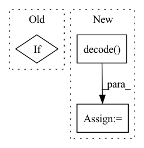

Pattern ID :1286
Before Change
// compute loss
mask = labels != 100
loss = None
if labels is not None:
loss_fn = nn.CrossEntropyLoss()
loss = loss_fn(logits.reshape(-1, logits.shape[-1]), labels.reshape(-1))
// CRF
// loss = -self.crf(emissions=logits, After Change
mask=mask,
reduction = "token_mean")
else:
preds = self.crf.decode(emissions=logits, mask=mask)
logits = torch.LongTensor(preds)
// pass
return dict(loss=loss, logits=logits)In pattern: SUPERPATTERN
Frequency: 3
Non-data size: 3
Instances Fragment ID: 4546469
Project Name: thu-keg/omnievent
Commit Name: 05fcde9c3b3b7dc6cdb8ad1fd5162263d7f2913d
Time: 2022-05-17
Author: penghao20170136@163.com
File Name: src/OpenEE/model/model.py
M Class Name: ModelForSequenceLabeling
N Class Name: ModelForSequenceLabeling
M Method Name: forward(5)
N Method Name: forward(5)
M Parent Class: nn.Module
N Parent Class: nn.Module
M File Name: src/OpenEE/model/model.py
N File Name: src/OpenEE/model/model.py
M Start Line: 86
M End Line: 103
N Start Line: 88
N End Line: 103
Before Change
labels = torch.cat((torch.zeros(batch, device = device), torch.ones(batch, device = device)), dim = 0)
if return_discr_loss:
labels = torch.flip(labels, (0,))
real_or_fake = self.disc(torch.cat((fmap, img), dim = 0))
gan_loss = F.binary_cross_entropy(real_or_fake, labels)After Change
fmap, indices, commit_loss = self.encode(img)
fmap = self.decode( fmap)
if not return_loss:
return fmap
Fragment ID: 4546465
Project Name: lucidrains/nuwa-pytorch
Commit Name: 6dc8b217f76acb25f8b520e435b7e08a35d884f6
Time: 2022-01-02
Author: lucidrains@gmail.com
File Name: nuwa_pytorch/nuwa_pytorch.py
M Class Name: VQGanVAE
N Class Name: VQGanVAE
M Method Name: forward(4)
N Method Name: forward(4)
M Parent Class: nn.Module
N Parent Class: nn.Module
M File Name: nuwa_pytorch/nuwa_pytorch.py
N File Name: nuwa_pytorch/nuwa_pytorch.py
M Start Line: 128
M End Line: 153
N Start Line: 158
N End Line: 174
Before Change
// print("hello0")
// 下面是使用CFR
crf_model = CRF(self.num_token_type, batch_first=True)
if USE_CUDA:
crf_model = crf_model.cuda()
if not is_test:
log_likelihood = crf_model(ner_score, data_item["token_type_list"].to(torch.int64),
mask=data_item["mask_tokens"])After Change
mask=data_item["mask_tokens"])
loss_ner = -log_likelihood
pred_ner = self.crf_model.decode( ner_score) // , mask=data_item["mask_tokens"]
// 下面使用的是Softmax
// loss_ner = F.softmax(ner_score, data_item["ner_type"]) Fragment ID: 4546467
Project Name: mangonihao/multiheadjointentityrelationextraction_simple
Commit Name: 3a8d46652627013ee302506e87489ee75fea8ae9
Time: 2021-03-08
Author: 2075419247@qq.com
File Name: modules/joint_model.py
M Class Name: JointModel
N Class Name: JointModel
M Method Name: forward(4)
N Method Name: forward(4)
M Parent Class: nn.Module
N Parent Class: nn.Module
M File Name: modules/joint_model.py
N File Name: modules/joint_model.py
M Start Line: 128
M End Line: 139
N Start Line: 130
N End Line: 165